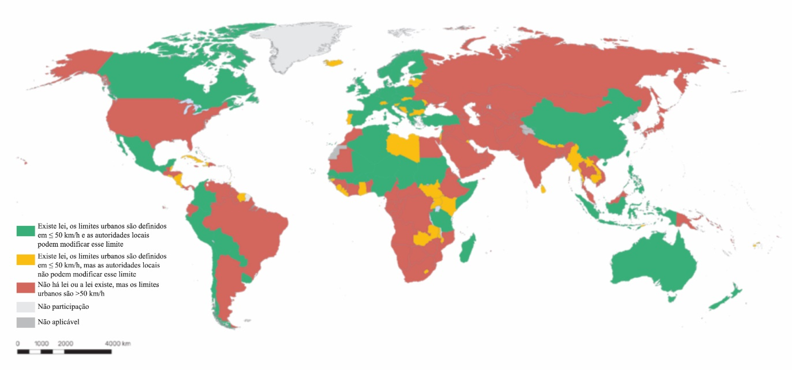

2 Diretrizes sobre Gestão de Velocidades
2.1 Diretrizes internacionais
Internacionalmente, a temática da gestão de velocidade tem sido objeto de importantes publicações institucionais. Particularmente em relação aos limites de velocidade seguros, o Brasil está entre os países que não seguem as recomendações internacionais sobre limites de velocidade em áreas urbanas, segundo estudo realizado pela Organização Mundial da Saúde publicado em 2023 (WHO 2023a) em seu “Global status report on road safety 2023”. Isso porque o Brasil possui limites de velocidade em áreas urbanas maiores que 50 km/h. O cenário entre os diversos países pesquisados (163) pode ser observado na Figura 2.1.

A publicação da Organização Mundial da Saúde intitulada “Speed management: a road safety manual for decision-makers and practitioners” (WHO 2023b) evidencia a necessidade de atuação em várias frentes para uma gestão adequada de velocidades. Isso inclui o estabelecimento de limites de velocidade seguros, medidas de fiscalização de velocidade, medidas relacionadas ao desenho das vias, medidas de comunicação e conscientização, entre outras.
O “Guide for Safe Speeds: Managing Traffic Speeds to Save Lives and Improve Livability”, do Banco Mundial, consiste em um guia prático para implementar políticas de gestão de velocidades com base na abordagem de Sistema Seguro. O documento propõe um método para definir limites seguros de velocidade conforme o uso real da via, a presença de usuários vulneráveis, o contexto urbano ou rural e a qualidade da infraestrutura, em oposição a métodos tradicionais centrados no fluxo veicular ou na velocidade do 85º percentil. O guia recomenda que a gestão de velocidades combine definição de limites seguros, desenho viário autoexplicativo, planejamento do uso do solo, fiscalização, penalidades, tecnologia veicular, educação, comunicação, monitoramento e avaliação. Também destaca que reduções de velocidade trazem benefícios além da segurança, como menor poluição sonora e atmosférica, incentivo à caminhada e ao uso da bicicleta, melhoria da saúde pública, inclusão social, redução de custos econômicos dos sinistros e maior qualidade de vida urbana (Turner et al. 2024).
Em uma publicação mais recente, o guia “Designing for Safe Speeds”, do Global Designing Cities Iniatiative (GDCI), que defende uma abordagem sistêmica de gestão de velocidades, combinando limites regulamentares seguros, desenho viário, operação, comunicação, fiscalização e tecnologias veiculares, mas enfatiza especialmente o papel do desenho urbano na redução das oportunidades de excesso de velocidade. O guia diferencia velocidade-alvo, velocidade de projeto e velocidade regulamentada, recomendando que elas estejam alinhadas às limitações do corpo humano e ao contexto da via, com velocidades mais baixas onde há a exposição de usuários vulneráveis. Também apresenta estratégias como redução da largura das faixas, redistribuição do espaço viário, encurtamento de travessias, redução de raios de giro, implantação de deflexões verticais e horizontais, criação de zonas de baixa velocidade, corredores seguros e ruas compartilhadas. Além da segurança viária, o material relaciona velocidades seguras a benefícios mais amplos de saúde pública, mobilidade ativa, redução de ruído e poluição, vitalidade econômica, inclusão e qualidade de vida urbana (GDCI 2025).
2.2 Diretrizes nacionais
No contexto brasileiro, o Plano Nacional de Redução de Mortes e Lesões no Trânsito (Pnatrans) contempla diversos aspectos relacionados à gestão de velocidades. Dentre as diversas ações descritas na Resolução CONTRAN n° 1004, de dezembro de 2023, referente ao (Pnatrans), aquelas que tratam da gestão de velocidades encontram-se listadas a seguir (BRASIL 2023):
Ação 2001 - Revisar normativos e manuais técnicos referentes a sinalização de trânsito para incorporarem inovações e acompanharem os preceitos de sistemas seguros;
Produto 2001 - Definição de cronograma de normas e manuais prioritários a serem revisados, com base em evidências locais e melhores práticas internacionais;
Produto 2002 - Revisão de normas e manuais de sinalização de trânsito;
Produto 2003 - Revisão da regulamentação de procedimentos de testes para uso temporário de sinalização de trânsito e de soluções inovadoras de engenharia de tráfego;
Produto 2004 - Divulgação dos resultados de testes de sinalização de trânsito e das soluções inovadoras implementadas no referido ano.
Ação 2002 - Expandir soluções e referências técnicas oficiais para infraestrutura viária segura, de acordo com os preceitos de sistema seguro;
Produto 2009 - Elaboração de cartilha para incorporação de estratégias de Sistema Seguro e Visão Zero nos projetos de infraestrutura viária;
Produto 2010 - Capacitações em Sistema Seguro e Visão Zero para gestores e técnicos de mobilidade de todas as esferas governamentais;
Produto 2011 - Elaboração de manual de medidas moderadoras de tráfego, especificando os padrões de segurança considerando as funções das vias e as necessidades de todos os usuários;
Produto 2012 - Regulamentação de novos elementos de moderação de velocidade, e outros elementos para implementação de infraestrutura viária compatível com sistema seguro;
Produto 2014 - Elaboração de manual para projetos de corredores de priorização do transporte público coletivo, com enfoque na segurança de todos os usuários, contemplando diretrizes de projetos geométricos e sinalização viária.
Ação 2003 - Regulamentar e orientar a implantação de projetos de gestão de velocidades em áreas urbanas;
Produto 2017 - Elaboração de manual de gestão de velocidades em áreas urbanas, em linha com a abordagem de Sistema Seguro e com a Declaração de Estocolmo;
Produto 2018 - Capacitações em gestão de velocidades para gestores públicos e técnicos de mobilidade de diferentes esferas;
Produto 2019 - Revisão dos limites de velocidade permitidos pela lei federal e adequação aos recomendados pela Organização Mundial de Saúde (OMS);
Produto 2020 - Regulamentação da fiscalização de velocidade média;
Produto 2021 - Publicação de lei dispondo sobre velocidade de circulação de motociclistas nos corredores, considerando um limite menor ou igual ao limite da via.
Ação 6005 - Fortalecer a fiscalização de velocidade em rodovias e vias urbanas;
Produto 6018 - Instalação de equipamentos de fiscalização eletrônica em novos pontos críticos identificados em rodovias e vias urbanas, com limite de velocidade igual ou acima de 60 km/h;
Produto 6020 - Direcionamento da fiscalização para ocorrências de excesso de velocidade e, no caso de rodovias, ultrapassagens proibidas.
Ação 6007 - Direcionar a fiscalização de trânsito referente aos fatores de risco e de proteção dos usuários do sistema de mobilidade.
Produto 6025 - Direcionamento da fiscalização de trânsito para constatação das infrações de não uso do cinto de segurança e de transporte inadequado de crianças em veículos automotores;
Produto 6026 - Direcionamento da fiscalização de trânsito para constatação das infrações de não uso e uso inadequado do capacete para motociclistas bem como outras condutas de risco de motociclistas;
Produto 6027 - Direcionamento da fiscalização de trânsito para constatação das infrações relacionados a condutores que consomem álcool e outras substâncias psicoativas;
Produto 6028 - Direcionamento da fiscalização de trânsito para comportamentos que promovam a distração dos condutores ou condução prejudicada como uso do celular e desrespeito ao tempo de descanso para condutores profissionais;
Produto 6029 - Direcionamento da fiscalização para prevenção das infrações que colocam pedestres e ciclistas em risco.
Percebe-se, a partir da diversidade de ações e produtos referentes à gestão de velocidades no Pnatrans, que o tema está adequadamente contemplado na política nacional de segurança viária. Entretanto, resultados objetivos na redução de mortos e feridos no trânsito apenas serão atingidos se os produtos previstos no Pnatrans forem efetivamente elaborados.
Recentemente, atendendo ao disposto no Produto 2017 do Pnatrans, a Secretaria Nacional de Trânsito lançou o Guia de Gestão de Velocidades, o qual caracteriza a gestão de velocidades como um conjunto de ações coordenadas para garantir que a velocidade praticada seja segura e compatível com o ambiente viário, os modos de transporte presentes e os usuários mais vulneráveis (Brasil, 2026), ou seja, com o uso real da via por todos os usuários. O documento organiza a discussão em torno da definição de limites regulamentares de velocidade, estratégias de gestão em áreas urbanas, infraestrutura, sinalização, fiscalização, tecnologias, comunicação, educação, engajamento comunitário e avaliação de impactos.
Em 2024, a Secretaria Nacional de Trânsito disponibilizou a publicação do “Guia de Medidas de Moderação de Tráfego”, atendendo ao produto 2011 do Pnatrans. O guia apresenta soluções de engenharia, redesenho urbano e estratégias de fiscalização com o objetivo de incentivar a prática de velocidades seguras no trânsito. O Guia de Gestão de Velocidades reúne subsídios técnicos, diretrizes e referências para a implementação de políticas de gestão de velocidades no Brasil (BRASIL 2024).